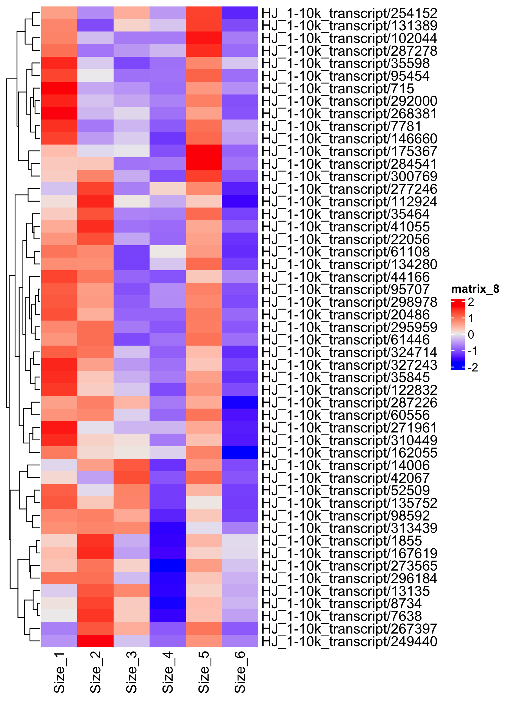
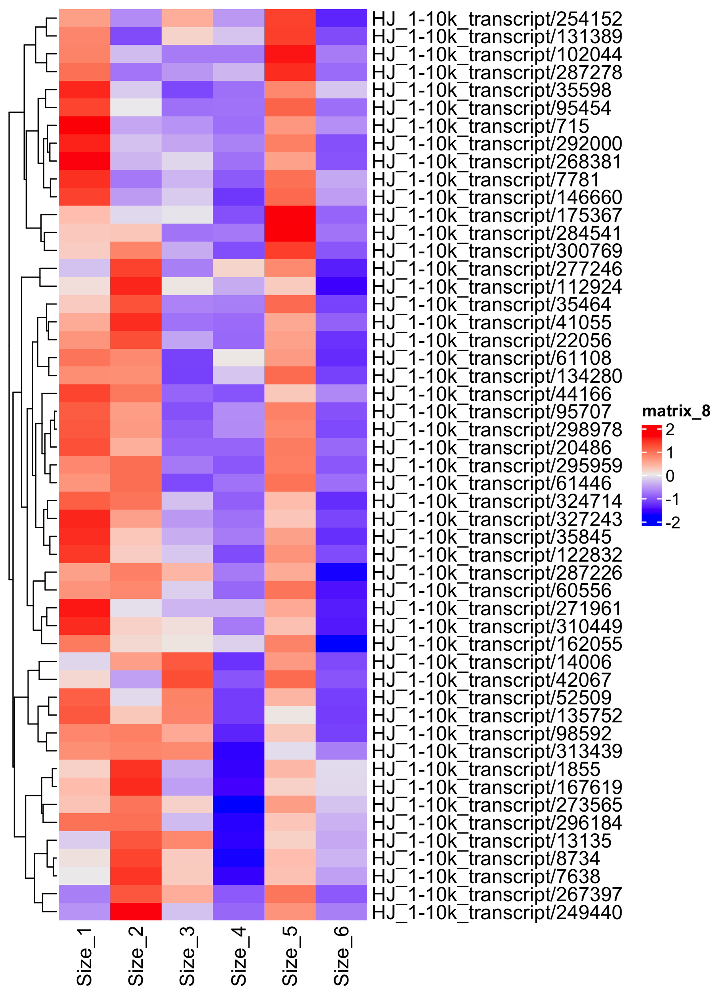

🏡Zhang Lab, Aug 05, 2022 🏡
🔬Multi-omics research center, State Key Laboratory of Crop Stress Adaption and Improvement, HENU, Kaifeng, Henan 🔬
2 NGS转录组分析
2.1 方法
以三代全长转录本作为参考序列，将每个样品的clean reads（二代数据）比对回参考序列。该过程我们采用了RSEM软件，RSEM流程中选择使用bowtie2软件，参数为bowtie2默认参数. RSEM对bowtie的比对结果进行统计，进一步得到了每个样品比对到每个基因上的readcount 数目，并对其进行FPKM转换，进而分析基因的表达水平。
材料间的相关性使用斯皮尔曼相关计算，PCA结果通过PCAtools包完成。
差异比对软件使用的是DESeq2。
使用所有差异表达的基因作为基因集合，然后通过mFuzz对这些基因进行分类，我们选择前期和后期差异明显的cluster进行后续分析。
富集分析使用通过TBtools完成。
3.1 结果
3.1.1 Global transcriptomic changes of rhizome of P. sibniricum between juvenal and adult
为了搞清楚幼年黄精和成年黄精块茎在药效方面的差异，我们以3代全长转录组检测到的转录本为参考，将2代测序的clean reads比对回参考序列，对不同时期的野外黄精块茎样本进行精确的定性和定量。 结果表明平均每个样品产生了78.25 Mb的clean reads, 平均覆盖度为91.55% (Table S9)样品间的相关性表明分属juvenal组的样品和adult组的样品之间相关性较低。由于野外取样的原因，个体差异较为明显，生物学重复间的差异较大，特别是幼年材料，按大小划分整体不容易区分，对于成年材料来说，对于成年材料来说，size5和size6的生物学重复较好，但两者间的相关性非常低，说明差异较大（Figure5 A）,同时，我们对log2转换后的FPKM值计算了欧式距离，并进行了层级聚类，距离方法为complete,同时也做了PCA分析，结果显示不同年份的材料较好的聚集在一起(Figure S5 A,B)，且Size5和其他材料差异较大。 为了研究不同年份黄精之间的差异，我们对他们做了成对的差异分析，与材料相关性分析结果一致，size5和size6与其他组合差异基因数量最多，同时size5和size6之间也存在较大差异。综上，我们发现在转录水平幼年黄精和成年黄精间确实存在明显差异，而两个成年黄精材料间也存在较为明显的差异，尽管幼年黄精间可能由于个体差异的关系生物学重复不太理想，造成重复间相关性较低，但是在压缩数据变异度后（对FPKM取log）不同大小的黄精块茎材料间的差异还是被凸显出来，所以通过经验判断黄精年份的方法确实存在一定问题，但是在转录水平确实体现出一定的趋势，同时在如此大的个体差异存在的情况下，幼年黄精和成年黄精间显著的差异表明黄精在生长发育到一定阶段后，块茎内正在进行的生物学过程及代谢途径确实发生了显著的改变。从幼年黄精和成年黄精材料的转录及代谢数据中去规避个体差异造成的影响从而挖掘真实的年份积累造成的差异成为本研究关注的重点。
3.1.2 Time course transcriptome analysis
为了更好的了解这些DEGs在不同年份之间的表达变化，我们通过mFuzz对DEGs做了时序分析，这些DEGs被分成了12个cluster。这些DETs表现出多样的趋势，在这些expression pattern中，我们更加关注在Adult中特异表达的DEGs，其中cluster2,8,9表现出明显的在材料size5中高表达，而在其他时期相对较低（Figure 5 A）。通过后续的GO富集分析我们发现，cluster2的DEGs更多的影响的是非编码RNA代谢通路ncRNA metabolic process,泛素依赖性蛋白质分解代谢过程ubiquitin−dependent protein catabolic process(Figure S6 A)。cluster8与cluster2的功能类似，同样也是影响 RNA metabolic process，protein modification process.然而 cluster9则显著富集在碳水化合物代谢，多糖代谢过程等通路（Figure 6 B）从表达模式上看，Size5中，除了在nuclear metabolic和protein modification这些pathway上调之外，多糖代谢，特别是多糖合成代谢也上调了。而同属Adult的size6特意表达的基因在cluster11，GO富集分析的结果显示这些DEGs更多的参与到了氧化还原，有机酸的生物合成代谢通路、苯丙烷的代谢通路中（Figure 6 C）从cellular component trem的富集结果看，这些DEGs与质膜相关，参与了植物细胞壁的形成。此外我们还发现在幼年黄精材料中特异性表达的一些cluster，比如cluster3在Size3阶段特意高表达，cluster4在size4阶段特意高表达，cluster10在size2阶段高表达，cluster12在size1阶段高表达，cluster5在size1-2阶段高表达。综上，我们通过时序分析挖掘出老年黄精和幼年黄精在整体表达模式上的异同，结果表明，相对于幼年黄精，成年黄精在RNA metabolic process，protein modification process，obsolete oxidation-reduction progress,phenylpropanoid metabolic process较为活跃，此外在Size5的材料中我们发现了成年黄精在多糖合成代谢中要明显高于幼年黄精，而且在Size6中质膜，植物细胞壁合成的方面也要高于幼年黄精。
√ Successfully imported: 51 obs. of 6 variables
───────────────────────────────────────────────────────────────────────────────────────────────────────────────────────────────────────────────────────────────────────────────────────────────────────────────────────────────────────────────────────────────────────────────────────────────────────────────────────────────────────────────────────────────────────────────────────────────────────────────────────────────────────────────────────────────
Gene_ID KEGG_entry KOG_class_annotation Uniprot Annotation NR Annotation NT Annotation
───────────────────────────────────────────────────────────────────────────────────────────────────────────────────────────────────────────────────────────────────────────────────────────────────────────────────────────────────────────────────────────────────────────────────────────────────────────────────────────────────────────────────────────────────────────────────────────────────────────────────────────────────────────────────────────────
1 HJ_1-10k_transcript/267397 K00700|GBE1, glgB -- 1,4-alpha-glucan-branching enzyme 1, chloroplastic/amyloplastic-like [Asparagus officinalis] PREDICTED: Asparagus officinalis 1,4-alpha-glucan-branching enzyme 1, chloroplastic/amyloplastic-like (LOC109821070), mRNA 1,4-alpha-glucan-branching enzyme, chloroplastic/amyloplastic OS=Oryza sativa subsp. japonica GN=SBE1 PE=1 SV=2
2 HJ_1-10k_transcript/61446 K00700|GBE1, glgB Carbohydrate transport and metabolism 1,4-alpha-glucan-branching enzyme 1, chloroplastic/amyloplastic-like [Asparagus officinalis] PREDICTED: Asparagus officinalis 1,4-alpha-glucan-branching enzyme 1, chloroplastic/amyloplastic-like (LOC109821070), mRNA 1,4-alpha-glucan-branching enzyme, chloroplastic/amyloplastic OS=Oryza sativa subsp. japonica GN=SBE1 PE=1 SV=2
3 HJ_1-10k_transcript/162055 K00688|PYG, glgP -- alpha-1,4 glucan phosphorylase L isozyme, chloroplastic/amyloplastic isoform X2 [Asparagus officinalis] Alpha-1,4 glucan phosphorylase L-2 isozyme, chloroplastic/amyloplastic OS=Solanum tuberosum GN=STP-1 PE=1 SV=1
4 HJ_1-10k_transcript/310449 K00688|PYG, glgP -- alpha-1,4 glucan phosphorylase L isozyme, chloroplastic/amyloplastic-like isoform X1 [Glycine soja] Alpha-1,4 glucan phosphorylase L-2 isozyme, chloroplastic/amyloplastic OS=Solanum tuberosum GN=STP-1 PE=1 SV=1
5 HJ_1-10k_transcript/14006 K01209|abfA -- alpha-L-arabinofuranosidase 1-like [Asparagus officinalis] PREDICTED: Asparagus officinalis alpha-L-arabinofuranosidase 1-like (LOC109841490), mRNA Alpha-L-arabinofuranosidase 1 OS=Arabidopsis thaliana GN=ASD1 PE=1 SV=1
6 HJ_1-10k_transcript/295959 K01177|E3.2.1.2 -- Beta-amylase 2, chloroplastic [Cocos nucifera] -- Beta-amylase 1, chloroplastic OS=Arabidopsis thaliana GN=BAM1 PE=1 SV=1
───────────────────────────────────────────────────────────────────────────────────────────────────────────────────────────────────────────────────────────────────────────────────────────────────────────────────────────────────────────────────────────────────────────────────────────────────────────────────────────────────────────────────────────────────────────────────────────────────────────────────────────────────────────────────────────────
 
